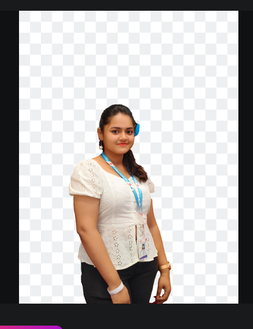

Tanisha Roy

Summary
I am a Computer Science Student currently pursing my B.Tech from Bengal Institute of Technology. I'm a quick learner with strong curiosity, and looking forward to applying my knowledge to real-world projects.
Education
B.Tech in Computer Science and Engineering - Bengal Institute of Technology (MAKAUT) (2022-2026)
Higher Secondary (12th) - Maria's Day School (2021-2022)
Secondary (10th) - Maria's Day School (2019-2020)
Work Experience
- Created a LAN Network - itc Infotech privated ltd
Gained knowledge how network connects.
Did an intership, the domain based on Cybersecurity. As I'm having interest on this.
Projects
- AI-Based CAPTCHA-less Security
We did a grouped project, which help us to gain knowledge.
We developed an next-gen security solutions that elimates the need for traditional CAPTCHAS!
Extra-Curricular Activities
- Cleared up to Fourth year art exam conducted by BANGIYA SANGEET PARISHAD with First Distinction (2021 - 2022)
- Certified Professional Nail and Mehendi Artist
- Experienced in Video Editing
Achievement
2nd place - Internal hackathon for Smart India Hackathon(SIH) section.